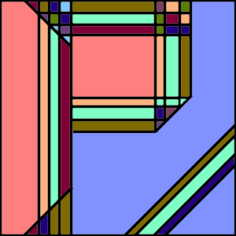

bout me: I am a student at Brown University studying Literary Arts and Philosophy. In the Fall, I will be taking a leave of absence to work on a political campaign, before returning in January of 2021 to begin my senior year. My current plan is to complete honors in Literary Arts and complete a thesis in Philosophy on the biological basis of consciousness.
hilosophy: My primary philosophical interest is the nature of consciousness: what is it and why does it exist? As we get an increasingly clear picture of how the physical structures of our brain determine our experiences, the mystery of why we have experiences at all only deepens. Neither the natural sciences, as important as they are to our understanding of the world around us, nor the social sciences (which are primarially focused on human behavior) seem to have the tools to solve this problem. In exploring these interests, I have taken courses in consciousness, mental representation, perception, logic, and epistemology, as well as an array of courses in computer science, neuroscience, and biology.
I am also interested in political philosophy, ethics, and aesthetics. I am particularly interested in the intersections and interactions between the often narrow focus of philosophy and the rest of the academic world. An overarching question of mine is how and whether we can make objective claims about ethical issues. I suspect that at least part of the answer lies in the nature of consciousness.
iterary Arts: I have been writing on and off since I was twelve, mostly short pieces which sometimes turn into short stories. At Brown I have taken several writing seminars, as well as courses in nature writing, ethics in short fiction, Russian literature, Old English (translation and history) and the history of the English language. Some of my favorite authors are Kazuo Ishiguro, Terry Pratchett, Lemony Snicket, and Gabriel Garcia Marquez. My goal is to complete an honors thesis in Literary Arts (though I am not sure in what genre or what form).
eading and Listening: Currently I am reading The Problems of Philosophy by Bertrand Russell and Where the Crawdads Sing by Delia Owens, and listening to Why Fish Don't Exist by Lulu Miller (the former host of "Invisibilia"). Recently, I finished the wonderful White Teeth by Zadie Smith. Slightly less recently, I finished the equally wonderful Milkman by Anna Burns, Jazz by Toni Morrison, and An American Marriage by Tayari Jones.
I also listen to a number of podcasts in my free time. I would recommend On the Media (News/Political Commentary), Radiolab (Science/Social Science), Invisibilia (Science/Social Science), and Amicus (Law) to anyone interested in listening to something new.
upreme Court: For some time now, I have been keeping up with the Supreme Court's oral argument and opinion calendars. The opinions and arguments are easier to follow than you might expect, and due to the nature of the news cycle (and the way the Court releases its decisions) reporters frequently pass over important details in the scramble to write stories on big cases. Perhaps more frequently, signficant cases pass under the radar with hardly any mention in the news. You can find the Court's oral arguments here under Argument Audio, and their most recent opinions here under Opinions of the Court.